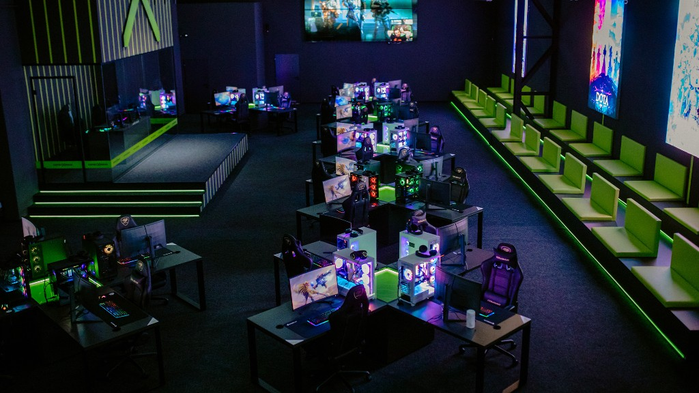
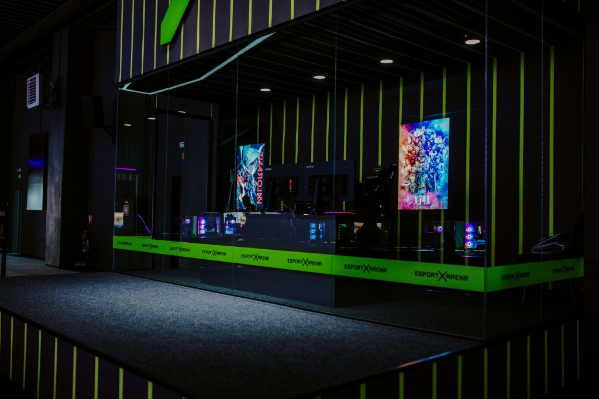
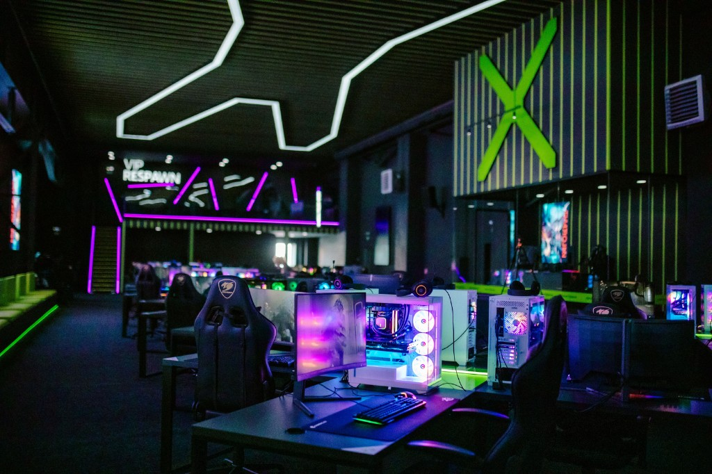
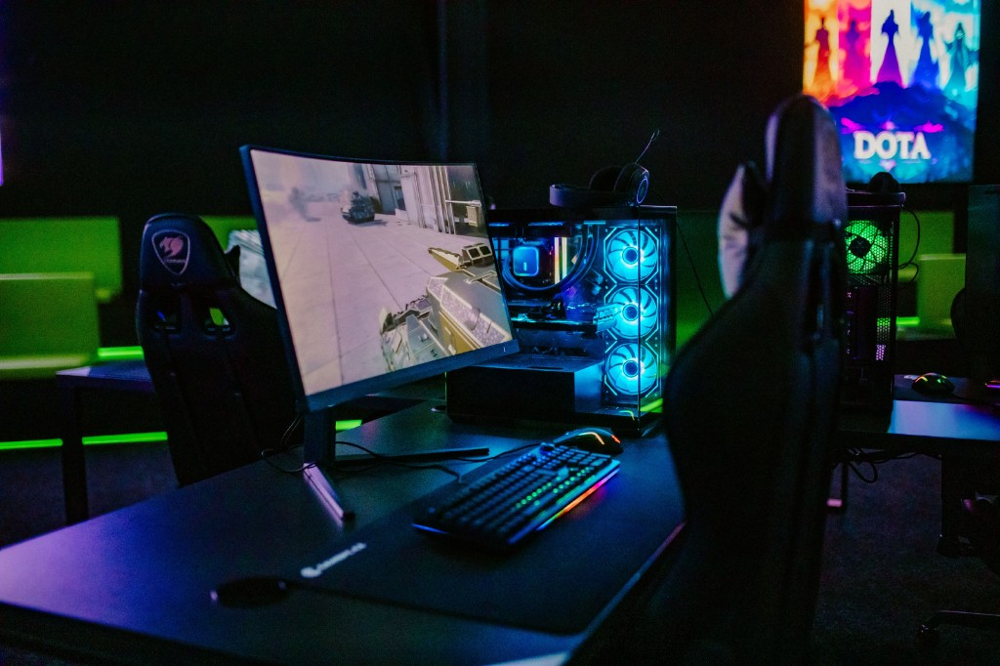
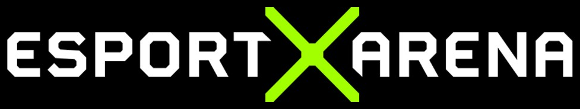
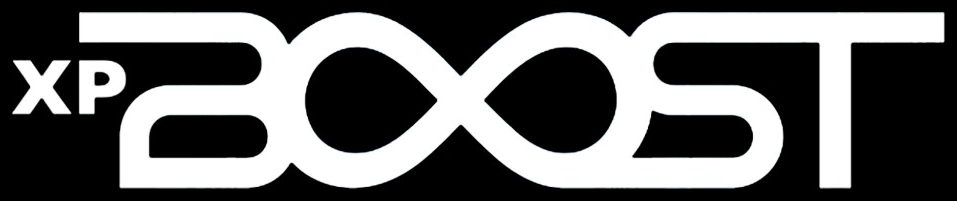

Studentský esport · Česko & Slovensko
Sezóna 4
Oficiální prezentace pro partnery. Registrace od 1. 9. 2026, start sezóny 1. 1. 2027. CS2 a League of Legends, oficiální spolupráce s Faceit, LAN finále v aréně.
O projektu
Co to je
ESPORTARENA TSV je studentský turnaj pro základní, střední, vyšší odborné i vysoké školy v Česku a na Slovensku. Kapitán registruje tým, soupiska se ověřuje, zápasy mají jasná pravidla.
Proč to funguje
Není to náhodný event. Je to opakovaná sezónní soutěž, která roste každý rok — více škol, více hráčů, silnější stream i sociální sítě.
Růst účasti
Každý tým má 5 hráčů. Z jedné školy může jít víc týmů. Čísla S1–S3 jsou historická, S4 je cíl.
Školy v turnaji
Hráči (5 na tým)
Kvalifikace
Počet startů v kvalifikacích
S4 cíl odpovídá otevření turnaje pro ZŠ, SŠ, VOŠ i VŠ v Česku i na Slovensku.
Prize pool
120 000 Kč
Minulá sezóna (S3). Prize pool Sezóny 4 se teprve uzavírá — proto ho v této prezentaci neuvádíme jako slib.
Formát, který sponzor vidí
Dosah · stream
Průměr diváků na Twitchi
Zhlédnutí na Twitchi
Sezóna 4 se přesouvá na Kick, aby byl oficiální přenos pod značkou turnaje. Konkrétní URL kanálu zveřejníme po uzavření spolupráce.
Dosah · sociální sítě
@esportarenacz · hlavní kanál
10 900
sledujících na Instagramu organizátora. Důležité posty turnaje jdou jako kolaborace sem — dosah celé arény, ne jen ligového profilu.
@esportarena_tsv · turnaj
1 020
sledujících čistě na turnajovém účtu — kapitáni, hráči, školy.
Sezóna 4
Kalendář
Registrace od 1. 9. 2026.
Start sezóny 1. 1. 2027. Termíny kvalifikací a LAN oznámíme v průběhu registrace.
Platforma
Oficiální spolupráce s Faceit. Celý turnaj se odehraje na jejich platformě — férový anti-cheat, přehledné zápasy, důvěryhodný rámec pro školy i partnery.
Vysílání
Vlastní Kick kanál. Po třech sezónách na Twitchi stavíme oficiální přenos pod značkou TSV. S Kickem ladíme podmínky spolupráce.
Proč je S4 jiná než předchozí ročníky
LAN · EsportArena Plzeň
Bannery partnerů visí tady — stage, hráčské stanice, VIP tribuna. Kamery berou prostor, ne stock fotku.




Partnerství
01 · Stream
Logo na streamu
Značka je vidět v oficiálním přenosu kvalifikací i LAN. Overlay, který sledují hráči, školy i fanoušci.
02 · Aréna
Bannery na LAN
Pokud dodáte bannery, vystavíme je v aréně při semifinále, finále a zápase o 3. místo. Kamery i fotky z eventů.
03 · Social
Zmínky na sítích
Partner je zmíněný na Instagramu turnaje a v kolaboracích na hlavní síti @esportarenacz. Ne schovaný v patičce, ale jako součást sezóny.
Partneři, kteří už jsou vidět

EsportArena
XP BoostHardware, periférie, nápoje, telco, vzdělávání, IT, gaming retail. Partner nevstupuje do náhodné akce — vstupuje do ligy, která má čtvrtou sezónu. Vaše logo bude stejně vidět.
Pojďme do Sezóny 4
Hlavní organizátor
Jiří Vrba
Rád pošlu follow-up, media kit nebo navrhnu konkrétní balíček podle rozpočtu.
Rychlé shrnutí
studentskyturnaj.cz · @esportarena_tsv · @esportarenacz · EsportArena Plzeň